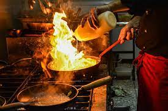
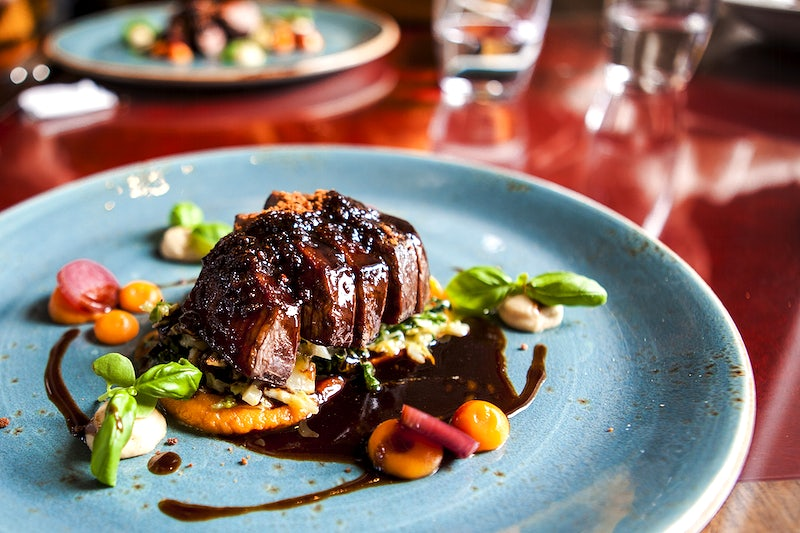
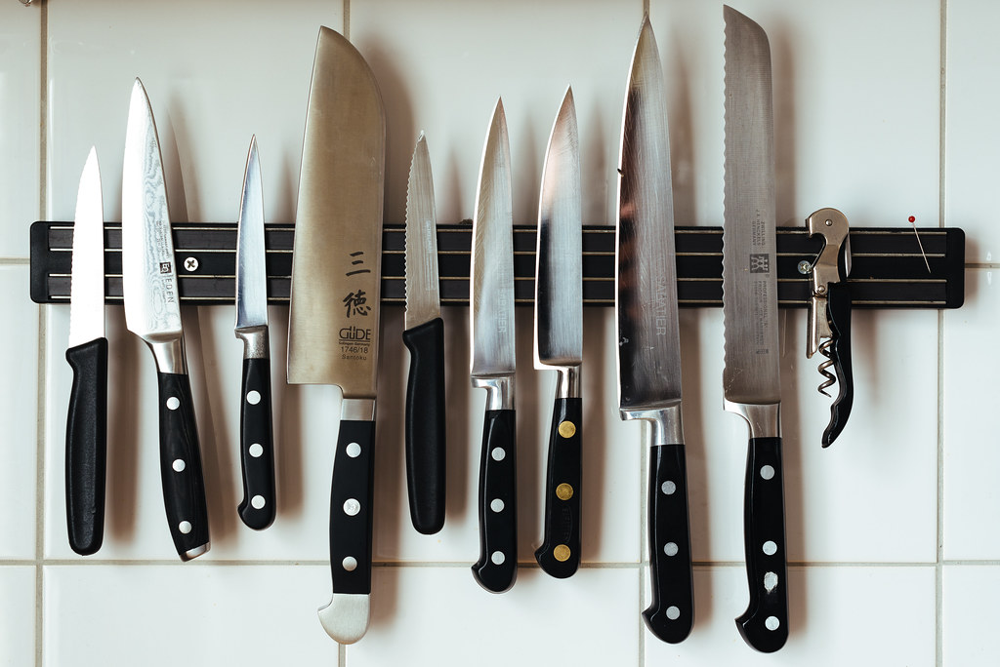

Cooking!
I started cooking by "helping" my mom when I was little and I have been ever since. I used to cook professionally, but that is a whole other world, and it was so intensive that I had a lot of trouble cooking at home anymore.


